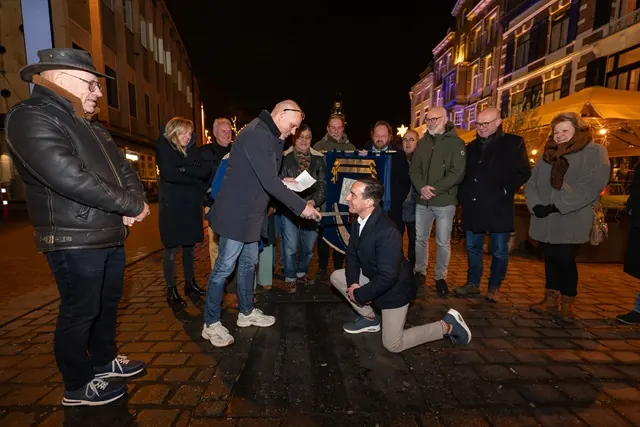

Nieuws ·
Erik Jansen geëerd met de Blauwe Steen 2023 in Nijmegen

In de historische setting van de hoek Broerstraat/Burchtstraat in Nijmegen, waar de Blauwe Steen al eeuwenlang een rol speelt in de stedelijke geschiedenis, is er een nieuwe eervolle vermelding bijgekomen. De Blauwe Steen, ooit gebruikt voor het uitvoeren van vonnissen, heeft nu een positieve wending gekregen dankzij het Huis voor de Binnenstad. Deze traditie, in 1984 herstart door de Vereniging Binnenstad Ondernemers, erkent nu personen die zich buitengewoon inzetten voor de ontwikkeling van Nijmegen.
De Blauwe Steen
In 2023 is de eer te beurt gevallen aan Erik Jansen, een Nijmegenaar die zich door de jaren heen heeft onderscheiden met tal van nevenfuncties, waaronder het recente voorzitterschap van de businessclub van NEC, OSRN. In zijn professionele leven heeft Jansen zich gespecialiseerd in schuldbeheer, waarbij hij van onschatbare waarde is voor vele ondernemers. Zijn medeoprichterschap van de Steveniers groep, die financiële steun biedt aan de Stevenskerk, en zijn inzet voor het Huis van de Nijmeegse Geschiedenis, onderstrepen zijn toewijding aan de stad.
Erik Jansen staat bekend om zijn brede interesse in de sociaal-culturele geschiedenis van Nijmegen en zijn toewijding aan het behoud van erfgoed, waaronder de historische Peemankeetjes. Als bestuurder van de OSRN toont hij een diep begrip van ondernemerschap, niet alleen in economische zin, maar ook in termen van maatschappelijke meerwaarde.
Met zijn toetreding tot het genootschap van de Blauwe Steen, wordt Erik Jansen terecht erkend als een persoon die zijn hart en ziel wijdt aan de stad Nijmegen.
Voor meer informatie over de Blauwe Steen en Erik Jansen’s bijdragen aan de stad, bezoek https://huisvoordebinnenstad.nl/over-ons/blauwesteen.